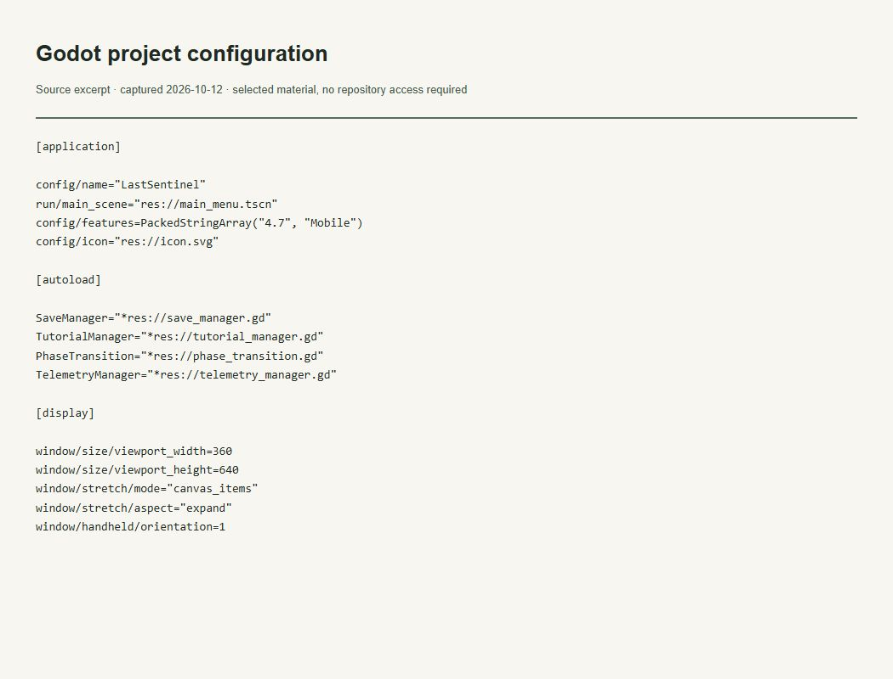

Evidence of the work
Godot project: gameplay and systems
What this evidence demonstrates
Shows the project entry scene, autoloaded systems and portrait viewport.

Read accessible verbatim transcript
[application]
config/name="LastSentinel"
run/main_scene="res://main_menu.tscn"
config/features=PackedStringArray("4.7", "Mobile")
config/icon="res://icon.svg"
[autoload]
SaveManager="*res://save_manager.gd"
TutorialManager="*res://tutorial_manager.gd"
PhaseTransition="*res://phase_transition.gd"
TelemetryManager="*res://telemetry_manager.gd"
[display]
window/size/viewport_width=360
window/size/viewport_height=640
window/stretch/mode="canvas_items"
window/stretch/aspect="expand"
window/handheld/orientation=1Context and limits
Configuration evidence does not prove a shipped product or successful gameplay test.
The image captures a locally rendered literal excerpt from the verified file. It is not a GitHub UI screenshot or a running-application screenshot. The excerpt retains its original language.